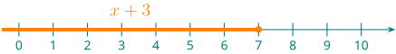
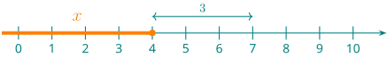
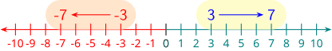

解不等式
有时候我们需要解这样的不等式：
| 符号 | 含义 | 例子 |
|---|---|---|
| > | 大于 | \(x + 3 > 2\) |
| < | 小于 | \(7x < 28\) |
| ≥ | 大于或等于 | \(5 ≥ x − 1\) |
| ≤ | 小于或等于 | \(2y + 1 ≤ 7\) |
解不等式的目标
我们的目标是让 \(x\)（或者别的变量）单独出现在不等号的左边，像这样：
或
这种情况叫作“已解”。
两边都减去 \(2\)：
简化后：
✅ 完成！
如何解？
解不等式和解方程很像，很多步骤是一样的……
但要注意一个关键点：不等号的方向可能会改变！
方向就是箭头“指向”哪一边。
\(<\) 变成 \(>\)
\(>\) 变成 \(<\)
\(≤\) 变成 \(≥\)
\(≥\) 变成 \(≤\)
安全的操作
这些操作不会改变方向：
- 两边同时加或减同一个数
- 两边同时乘或除以一个正数
- 简化某一边
可以先把右边简化：
以下操作会改变方向：
- 两边同时乘或除以一个负数
- 把左右两边调换位置
调换左右两边时，也要改变不等号方向：
加减法解不等式
要解不等式，通常可以在两侧同时加上或者减去一个数，如下：
两边都减 \(3\)：
这就是答案：\(x < 4\)。
也就是说，\(x\) 可以是任何小于 \(4\) 的数。
刚才我们做了什么？
从 \(x + 3 < 7\)：

变成了 \(x < 4\):

如果 \(x\) 出现在右边怎么办？
没问题，只要调换两边位置，并反转不等号！
两边都减 \(5\)：
但我们习惯把 \(x\) 放在左边，所以调换位置并反转符号：
看到了吗？不等号的尖仍然指向小的那一边，也就是 \(7\)。
所以答案就是 \(x > 7\)。
注意：\(x\) 可以放在右侧，但是我们通常习惯放在左侧。
乘除法解不等式
我们也常用乘法或除法来解不等式，但要注意正负号。
正数
两边乘或除以正数，方向不变。
两边除以 \(3\)：
答案就是 \(x > 5\)。
负数
⚠️ 乘以或者除以负数时，必须反转不等号的方向。
看看数轴就知道了！
例如，从 \(3\) 到 \(7\) 是增长，但从 \(-3\) 到 \(-7\) 则是减少。

所以当两边乘或除以负数时，需要反转方向，例如从 \(<\) 变成 \(>\)
再看一个例子：
两边除以 −\(2\)，并反转方向：
所以正确答案是 \(y > 4\)
请注意，在除以负数的那一步反转了不等号。
记住一句话：
乘或除以负数，方向要变。
不要轻易除以变量！
如果直接除以 \(b\)：
但如果 \(b\) 是负数，就要反转方向：
但我们不知道 \(b\) 是正还是负，所以不能确定答案！
为了方便理解，可以设想用 \(1\) 或者 \(-1\) 代替上例 \(bx < 3b\) 中的 \(b\)：
- 如果 \(b = 1\)，那么 \(x < 3\)
- 如果 \(b = −1\)，那么要解的就是 \(−x < −3\)，答案是 \(x > 3\)
所以：
不要随便用变量去除不等式，除非你知道它是正数或负数。
更复杂的例子
首先，两边乘 \(2\) 来消掉 \(\div 2\)：
然后两边加 3：
答案是 \(x < −7\)。
同时有两个不等式怎么办？
先两边乘 \(3\)（正数，方向不变）：
再两边减 \(6\)：
再两边除以 \(2\)（正数）：
最后两边乘 \(−1\)（负数），方向反转：
为了看起来整齐，最好把较小的数放在左边，较大的数放在右边。所以交换连个数，同时还要反转不等号方向：
总结
- 大多数简单的不等式都可以通过加减乘除来解。
- 但注意需要反转符号的情况：
- 乘或除以负数时，方向要反转。
- 调换左右两边时，方向也要反转。
- 不要随意用变量去除不等式，除非你确定变量是正数或负数。